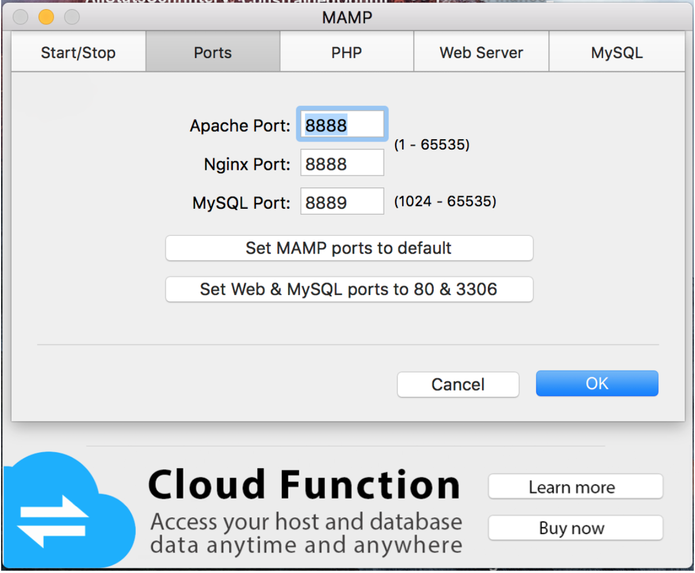
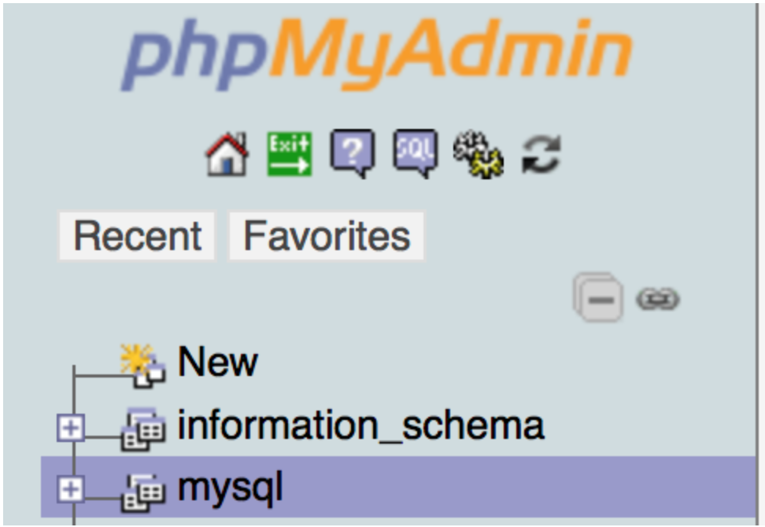

Management
User Manual
The chatbot is the only component of our project that will interact with the user. Since the bot will be integrated within the Renewables.AI platform ( which will be done by our clients), the chatbot will be located somewhere in the right corner of the page. It will look like a simple chat and the bot will be triggered once the user inputs some text. The bot can be used by asking simple questions regarding the user’s plants.
Deployment Manual
Local Deployment
In order to test the bot locally, you need to have the following installed:
- Bot Framework emulator (link and Tutorial to install)
- MAMP (link and Tutorial to install) - or any other local server
- Our chatbot source code
Local Deployment steps:
- Launch MAMP
-
On the “Preference” tab, click on ports and make sure you have the following ports configured:
 - Click on the “start servers” button
- When the servers will start running, the local host page will open in the browser.
-
On this page, click on the “Tools” tab and then “phpMyAdmin”
-
On the new page, on the left menu, click on “NEW”
 -
Then type “Plant” in the whitebox and click “Create”
- In the terminal, navigate the folder with the chatbot source code
- Type in the terminal : “node initDB.js” - this will fill in the database with data
- After this command finishes running, type: “ node chatbot.js”
- Open the Bot Framework Emulator
- Press on the “Enter your endpoint URL” field and type “http://localhost:3978/api/messages”
- In the Microsoft App ID fill in with the following : “66764a1f-6a0b-4d3d-9c1d-04deb3fd0716”
- In the Microsoft APP Password fill in with the following : “kYDD406^tujyryILAE67-?[”
-
In the Locale field, type “en-US”. The page should now look something like this:
-
Click on connect. Now the bot should be running and you can start asking questions.
Example:
Full Azure Deployment
Our clients did not request us to deploy the components on Azure and they plan to do that by themselves. However, we thought about what steps our clients must do in order to deploy it.
Firstly, they must automate the code deployment using Github on Azure. This feature is available on the Azure Portal, in the “All Section” menu and “Continuous Deployment” option. Having the Github repository of our code, it is then easy to have the platform as well as the bot continuously running. We found this Link to be a nice tutorial for continuous deployment.
Secondly, our clients must deploy the database to the SQL Azure database. This can be done using the SQL scripts. This allows the continuous deployment of the database as well. The best tutorial to do that is this official documentation link by Microsoft.